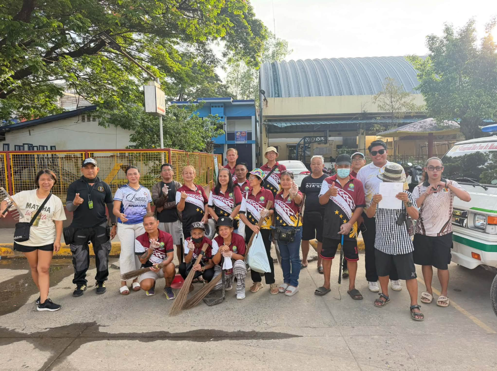

Interpurok-Basketball-League
A youth sports initiative organized by the Sangguniang Kabataan of Barangay Sta. Rita to promote sportsmanship, teamwork, and community participation through an interpurok basketball competition.
Explore completed SK projects in Barangay Sta. Rita, their accomplishments, and available budget and expenditure records.
A youth sports initiative organized by the Sangguniang Kabataan of Barangay Sta. Rita to promote sportsmanship, teamwork, and community participation through an interpurok basketball competition.

A community clean-up drive led by the Sangguniang Kabataan of Barangay Sta. Rita, held in waves to keep the barangay clean and safe
A youth debate contest on Sipag o Talino for secondary and college students, organized by the Sangguniang Kabataan of Barangay Sta. Rita.
There are no projects in this category yet. Try another filters.
Project information and financial records are presented according to the documentation made available by the SK council.